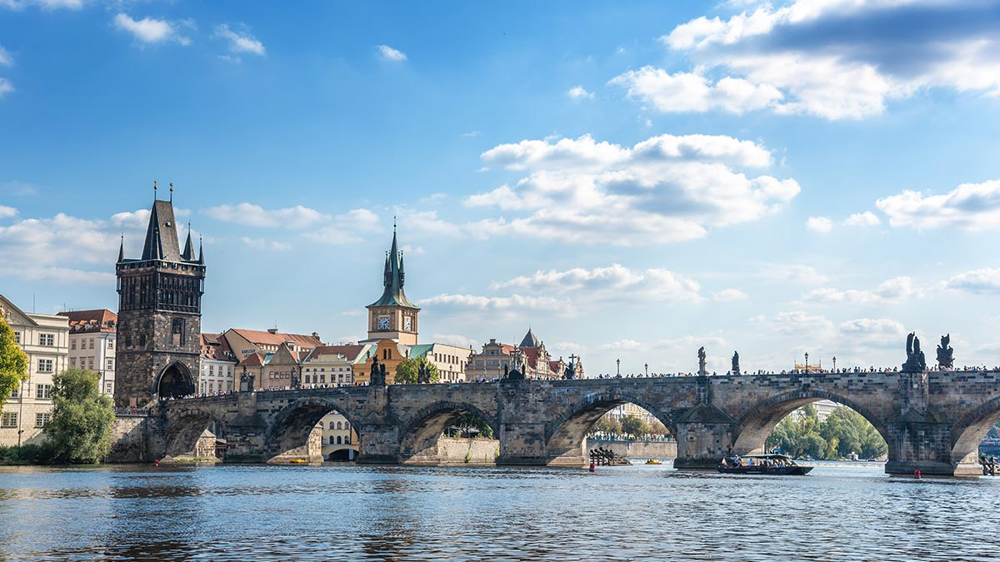
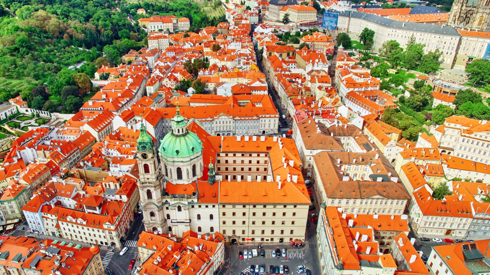
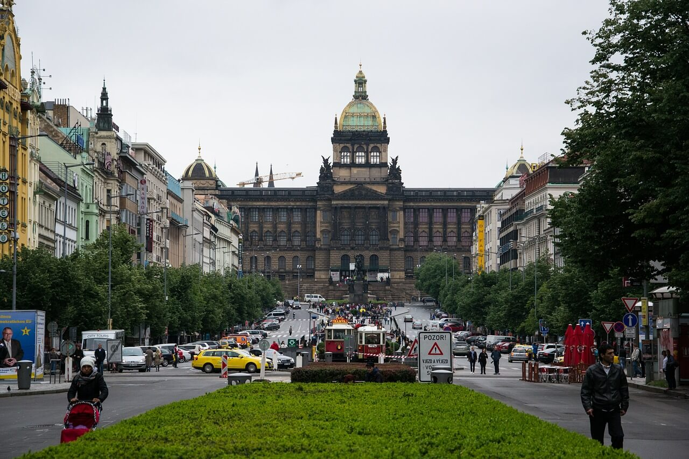
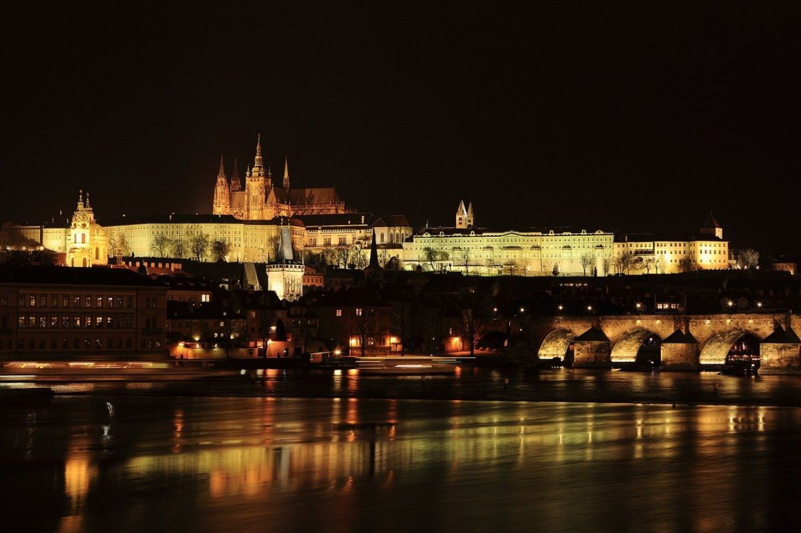

Prága
Prága történelme
Prága története több mint ezer évre nyúlik vissza, és szinte minden korszaka fontos szerepet játszott Európa életében. A város a 9. században alakult ki, és hamar a Cseh Királyság központjává vált. A középkorban a Habsburgok uralma és IV. Károly király ideje aranykort hozott: ekkor épült a Károly-híd, a híres egyetem, és a város európai kulturális központtá nőtte ki magát. A történelem viharai a huszita mozgalmak, a Habsburg-korszak, majd a 20. századi háborúk és kommunista időszak mind nyomot hagytak rajta, mégis megőrizte különleges hangulatát és gazdag örökségét. Ma Prága egyszerre történelmi ékszerdoboz és modern európai főváros, ahol a múlt és jelen természetesen találkozik minden utcán és téren.
Látványosságok
Prágai vár
A világ egyik legnagyobb várkomplexuma, ahonnan lélegzetelállító kilátás nyílik a városra. Itt található a Szent Vitus-székesegyház is.
Károly-híd
Prága egyik legismertebb jelképe, kőhíd barokk szobrokkal díszítve. Napfelkeltekor a legszebb!
Óvárosi tér és az Orloj

A város hangulatos központja, ahol minden óra egészkor életre kel az asztronómiai óra. Színes épületek, kávézók, pezsgő hangulat.
Kisoldal (Malá Strana)
Szerpentinező utcák, hangulatos éttermek és történelmi épületek - tökéletes sétahelyszín a Vár lábánál.
Tyn-templom
Gótikus stílusú templom, amely a tér fölé emelkedik és misztikus hangulatot ad az Óvárosi térnek.
Vencel tér
Prága modern központja, üzletekkel, éttermekkel, történelmi jelentőséggel - itt zajlott több fontos esemény a cseh történelemben.
Zsidó negyed (Josefov)
Synagógák, történelmi emlékek és a híres zsidó temető. Fontos kulturális és történelmi helyszín.
Kedvenc helyeink
Prágai vár
A Prágai Vár az egyik kedvenc helyem a városban. Szeretek végigsétálni az udvarokon, megnézni a Szent Vitus-székesegyházat, és felnézni a tornyokba, ahonnan egész Prága látszik. Mindig nyugodt érzés itt lenni, és közben észre sem veszem, hogy mennyi mindent fedeztem fel.
Horváth Levente Roland